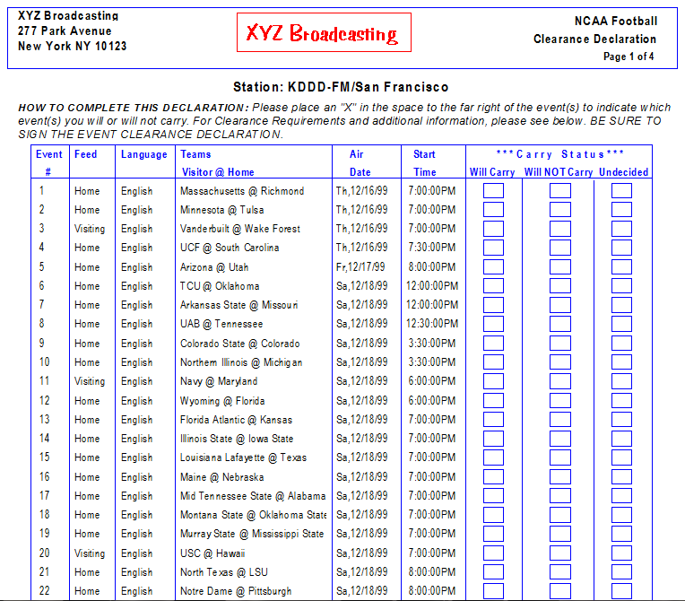
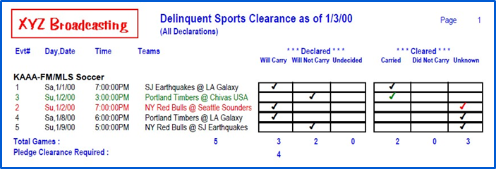

Station Sports Declaration
The Station Sports Declaration report will assist you in determining which events each of your affiliates will or will not carry. You can use this information when defining your affiliate agreements.
The report pulls its information from two places in the Traffic System; its wording comes from the Vehicle -> Options -> Sports Screen, and the events come from the Programming -> Event Schedule.
The option “Suppress printing of current Carry Status” is defaulted to being checked on. By suppressing the Carry Status, the report will not have any events selected as being carried or not carried, allowing the station to indicate their schedule. If the option is not checked, the report will pull the Carry Status from the Affiliate Agreement Pledge Screen.

Sports Clearance Report
The Sports Clearance report provides important clearance and compliance information, and is useful in tracking what your affiliates are airing versus what they pledged to air, as well as tracking the amount of games they are required to air.
Delinquent Clearances

- Delinquent: Lists all events in the agreement, and indicates which events have not been posted. Anything prior to today’s date is considered delinquent. Event information includes the game #, day, date and timing of broadcast, teams played, and the declared and cleared statuses
- All Declarations: lists every event on the agreement.
- Delinquent events will appear in red
- Delinquent Only: shows only those events that have not been cleared/reported, prior to today’s date.
Potential Clearances
- Potential: Lists all events in the agreement, and indicates the station’s potential in carrying all the events they have pledged to air (compliance). The Potential is calculated based on the Pledge Clearance Required Count setting in the Traffic System’s Vehicles>Options>Sports tab
- Anything prior to today’s date is considered delinquent.
- Any declared to be carried event in the future will be counted as Potential clearance
- Potential shortcomings will show in red
- Event information includes the game #, day, date and timing of airing, teams played, and the declared and cleared statuses
- Any event in the future declared to carry will be counted as Potential clearance
- Potential shortcomings will show in red; otherwise it will print in green
- All Declarations: lists all events in the agreement
- Delinquent events appear in red
- Events cleared as pledged will appear in black
- Future events will appear in black
- Green events are cleared, but were posted different than the declared status
- Delinquent/Differences Only: Lists only those events that have not been cleared, along with those cleared postings different than their declared status.
- Summary: Simply lists the number of Delinquent/Different pledges, the total number of events, the required amount of Events that must be carried to be considered compliant, the potential events remaining in the season to meet compliance, and the difference in those numbers. No Event information will be listed.